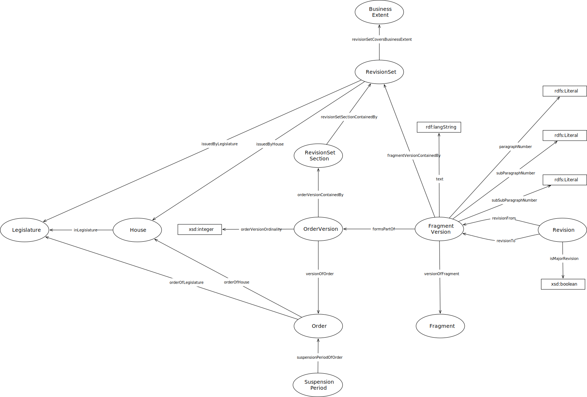

IRI: http://parliament.uk/ontologies/standing-order/BusinessExtent
IRI: http://parliament.uk/ontologies/standing-order/Fragment
IRI: http://parliament.uk/ontologies/standing-order/FragmentVersion
IRI: http://parliament.uk/ontologies/standing-order/House
IRI: http://parliament.uk/ontologies/standing-order/Legislature
IRI: http://parliament.uk/ontologies/standing-order/Order
IRI: http://parliament.uk/ontologies/standing-order/OrderVersion
IRI: http://parliament.uk/ontologies/standing-order/Revision
IRI: http://parliament.uk/ontologies/standing-order/RevisionSet
IRI: http://parliament.uk/ontologies/standing-order/RevisionSetSection
IRI: http://parliament.uk/ontologies/standing-order/SuspensionPeriod
IRI: http://parliament.uk/ontologies/standing-order/formsPartOf
IRI: http://parliament.uk/ontologies/standing-order/fragmentVersionContainedBy
IRI: http://parliament.uk/ontologies/standing-order/inLegislature
IRI: http://parliament.uk/ontologies/standing-order/issuedByHouse
IRI: http://parliament.uk/ontologies/standing-order/issuedByLegislature
IRI: http://parliament.uk/ontologies/standing-order/orderOfHouse
IRI: http://parliament.uk/ontologies/standing-order/orderOfLegislature
IRI: http://parliament.uk/ontologies/standing-order/orderVersionContainedBy
IRI: http://parliament.uk/ontologies/standing-order/revisionFrom
IRI: http://parliament.uk/ontologies/standing-order/revisionSetCoversBusinessExtent
IRI: http://parliament.uk/ontologies/standing-order/revisionSetSectionContainedBy
IRI: http://parliament.uk/ontologies/standing-order/revisionTo
IRI: http://parliament.uk/ontologies/standing-order/suspensionPeriodOfOrder
IRI: http://parliament.uk/ontologies/standing-order/versionOfFragment
IRI: http://parliament.uk/ontologies/standing-order/versionOfOrder
IRI: http://parliament.uk/ontologies/standing-order/isMajorRevision
IRI: http://parliament.uk/ontologies/standing-order/paragraphNumber
IRI: http://parliament.uk/ontologies/standing-order/subParagraphNumber
IRI: http://parliament.uk/ontologies/standing-order/subSubParagraphNumber
IRI: http://parliament.uk/ontologies/standing-order/text
This HTML document was obtained by processing the OWL ontology source code through LODE, Live OWL Documentation Environment, developed by Silvio Peroni.